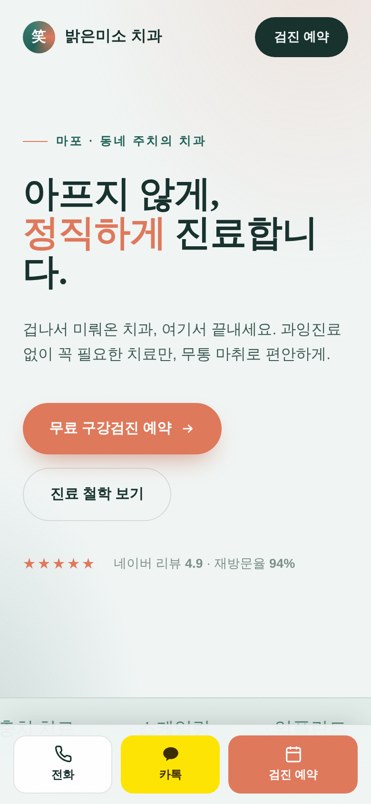
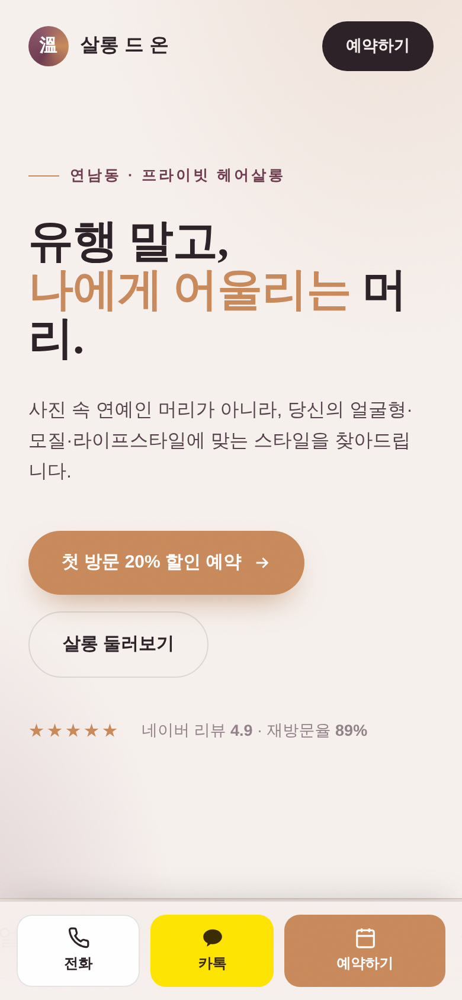
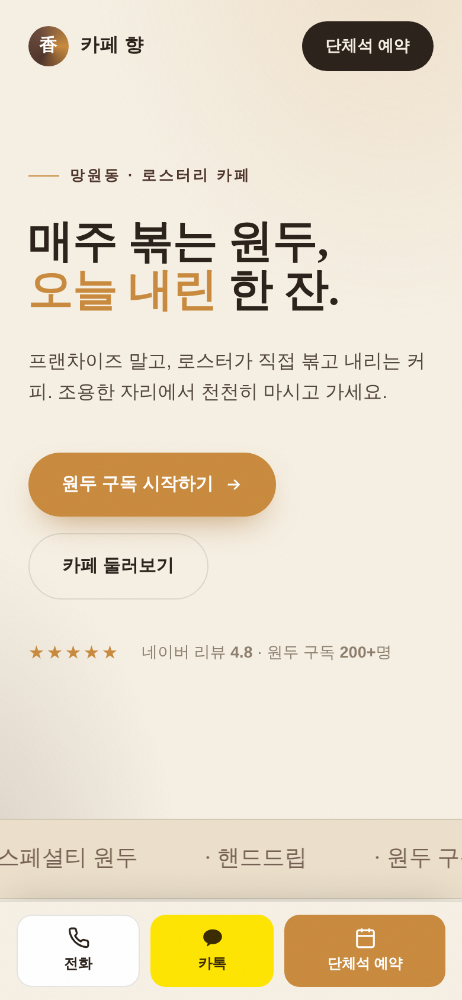
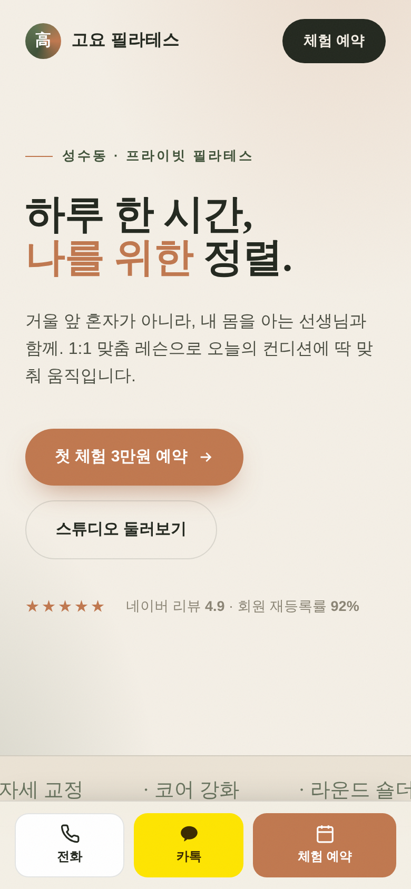

사장님 가게,
검색하면
뭐가 나오나요?
…혹시 아무것도 안 나온다면
48시간
뒤엔 이렇게 됩니다
병원 · 미용실 · 카페 · 필라테스 — 실제 제작 화면

치과

헤어살롱

카페

필라테스
✓
48시간 완성
✓
예약 버튼 포함
✓
샘플은
무료
J
Jason's Consulting
내 가게 이름으로
무료 샘플
받아보세요
마음에 안 들면, 안 쓰셔도 됩니다.
프로필 링크 👆